Un bloque es una representación gráfica de la relación causa-efecto existente entre la entrada y la salida de un sistema físico. El bloque se representa mediante un rectángulo que contiene el nombre o la descripción del elemento, o la operación matemática que se ejecuta sobre la entrada para obtener la salida.
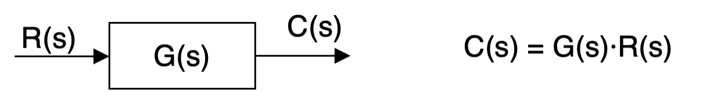
En este apartado veremos los elementos básicos de un diagrama de bloques y aprenderemos a realizar ciertas manipulaciones para simplificar cualquier diagrama de bloques hasta obtener un único bloque equivalente.
Elementos adicionales
Además de los bloques propiamente dichos, en un diagrama de bloques podemos encontrar también comparadores de señal y combinaciones entre líneas de actuación:
Comparadores
Son elementos que permiten hallar diferencias o sumas entre diversas señales. A continuación, se representan distintos símbolos de comparadores, indicando para cada uno de ellos la operación que realizan:
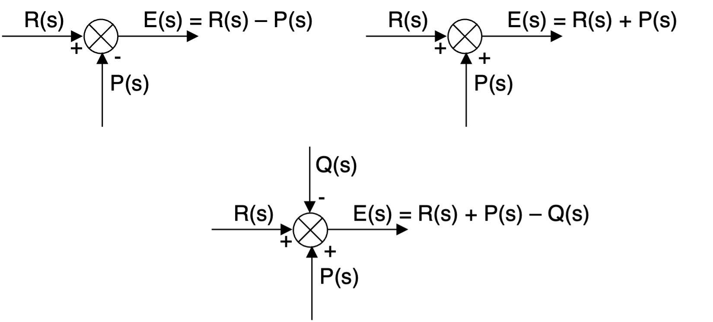
Combinaciones
La interacción entre bloques viene representada por líneas de actuación que llevan en su extremo una flecha que indica el sentido del flujo. Estas líneas de actuación pueden combinarse entre sí en diferentes puntos del diagrama. Se representan diferentes ejemplos de combinaciones de líneas de actuación:
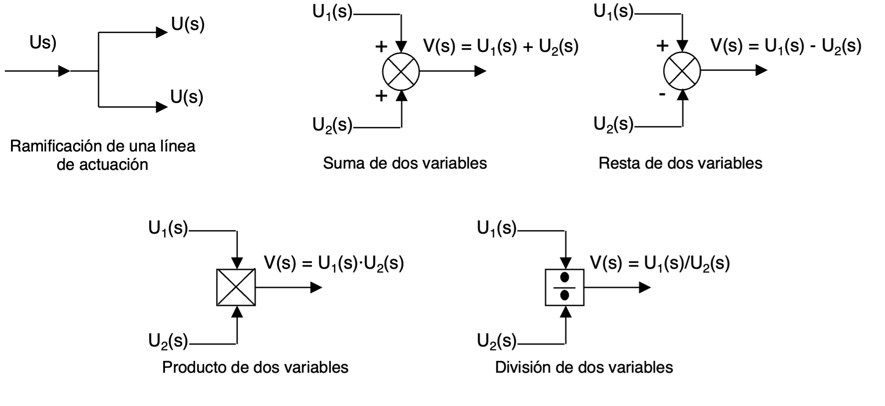
Como puedes ver, el comparador es un caso particular de combinación, pero es tan importante (aparece obligatoriamente en todos los sistemas de bucle cerrado, por ejemplo), que le dedicamos una categoría propia.
Simplificación de diagramas. Bloques equivalentes.
Los diagramas de bloques pueden simplificarse sustituyendo diferentes partes por bloques equivalentes. Vamos a estudiar los principales agrupamientos de bloques que podemos hacer y la expresión matemática que tendrá la función de transferencia de su bloque equivalente.
Conexión en serie
La señal de salida de un bloque es la señal de entrada del siguiente. Esto equivale a un solo bloque cuya función de transferencia sea el producto de las funciones de transferencia de cada uno de los bloques originales:
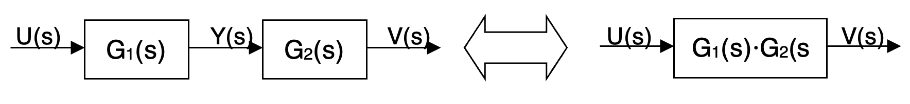
Para comprobar el valor de la función de transferencia global (la del bloque equivalente), primero determinamos la función de cada bloque:\[V(s)=G_{2}(s)Y(s)\]
\[Y(s)=G_{1}(s)U(s)\]
Sustituyendo la segunda ecuación en la primera, obtenemos:
\[V(s)=G_{2}(s)G_{1}(s)U(s)\]
Por lo tanto, la función de transferencia global será:
\[\frac{V(s)}{U(s)}=G_{1}(s)G_{2}(s)\]
Esto se puede comprobar para cualquier cantidad de bloques en serie. Es decir, que la función de transferencia equivalente de varios bloques en serie es el producto de las funciones de transferencia de cada bloque. Para "n" bloques lo podemos representar así:
\[G_{SERIE}(s)=\prod_{i=1}^{n}G_{i}(s)\]
Como el orden de los factores no altera el producto, se pueden cambiar de orden los bloques en serie sin afectar al circuito final:
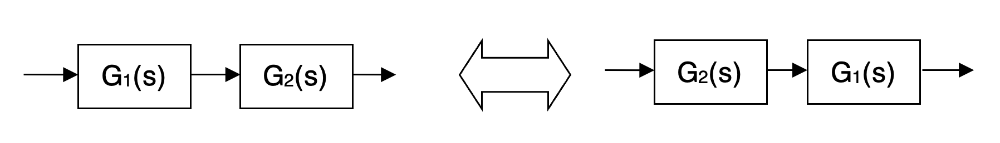
Conexión en paralelo
Al conectar bloques en paralelo es necesario colocar un nudo sumador a la salida. La función de transferencia equivalente es, en esta ocasión, la suma de las funciones de transferencia de cada bloque:
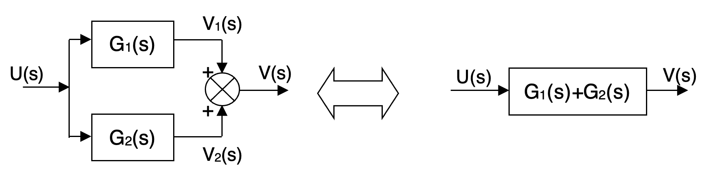
Para comprobar el valor de la FDT equivalente, volvemos a determinar las FDTs de cada bloque por separado:\[V_{1}(s)=G_{1}(s)U(s)\]
\[V_{2}(s)=G_{2}(s)U(s)\]
La señal de salida V(s) es la suma de V1 y V2, cuyos valores sustituimos:
\[V(s)=V_{1}(s)+V_{2}(s)=G_{1}(s)U(s)+G_{2}(s)U(s)=[G_{1}(s)+G_{2}(s)]U(s)\]
Por lo tanto, la función de transferencia global será:
\[\frac{V(s)}{U(s)}=G_{1}(s)+G_{2}(s)\]
Esto se puede comprobar para cualquier cantidad de bloques en paralelo. Es decir, que la función de transferencia equivalente de varios bloques en paralelo es la suma de las funciones de transferencia de cada bloque. Para "n" bloques lo podemos representar así:
\[G_{PARALELO}(s)=\sum_{i=1}^{n}G_{i}(s)\]
Realimentación directa
El montaje se muestra en la siguiente figura, donde también se indica la FDT equivalente:
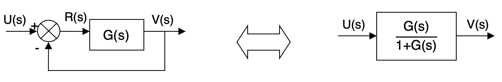
Para demostrar el valor de la función de transferencia global, partimos de los valores de R(s) y de V(s) obtenidos mirando la figura:\[R(s)=U(s)-V(s)\]
\[V(s)=G(s)R(s)\]
Sustituyendo R(s) por su valor en la expresión de V(s) y operando, obtenemos:
\[V(s)=G(s)[U(s)-V(s)]=G(s)U(s)-G(s)V(s)\]
\[V(s)+G(s)V(s)=G(s)U(s)\]
\[[1+G(s)]V(s)=G(s)U(s)\]
Por lo tanto, la función de transferencia global será:
\[G_{REALIM}(s)=\frac{V(s)}{U(s)}=\frac{G(s)}{1+G(s)}\]
Realimentación a través de un elemento
Este montaje se muestra en la siguiente figura, donde se incluye también el bloque equivalente:
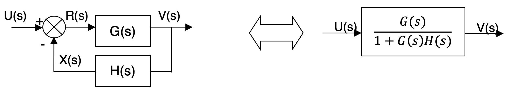
Para comprobar la FDT equivalente comenzamos estableciendo las funciones de cada elemento de la figura:\[R(s)=U(s)-X(s)\]
\[X(s)=H(s)V(s)\]
\[V(s)=G(s)R(s)\]
Sustituimos primero R(s) por su valor en la expresión de V(s) y obtenemos:
\[V(s)=G(s)[U(s)-X(s)]=G(s)U(s)-G(s)X(s)\]
Ahora sustituimos también la función X(s) por su valor y operamos:
\[V(s)=G(s)U(s)-G(s)H(s)V(s)\]
\[V(s)+G(s)H(s)V(s)=G(s)U(s)\]
\[[1+G(s)H(s)]V(s)=G(s)U(s)\]
Por lo tanto, la función de transferencia global será:
\[G_{REALIM}(s)=\frac{V(s)}{U(s)}=\frac{G(s)}{1+G(s)H(s)}\]
Con esta herramienta puedes instanciar la fórmula del lazo cerrado con números y ver qué le pasa al error cuando subes la ganancia.
Transposición de ramificaciones y nudos
Se exige en el curso. La PAU no la pide por ahora (podría entrar algún año), pero aquí sí: hace falta cuando un diagrama tiene lazos solapados, como en el problema final de la unidad.
Para simplificar diagramas de flujo complicados, a veces interesa transponer los bloques en un punto de bifurcación o en un punto de suma. Veremos ejemplos para realizar esto, incluyendo la comprobación de que las salidas V1 y V2 quedan igual después de realizar la transposición.
Transposición en bifurcaciones
En primer lugar, vemos la transposición de un bloque hacia "aguas abajo" de la bifurcación:
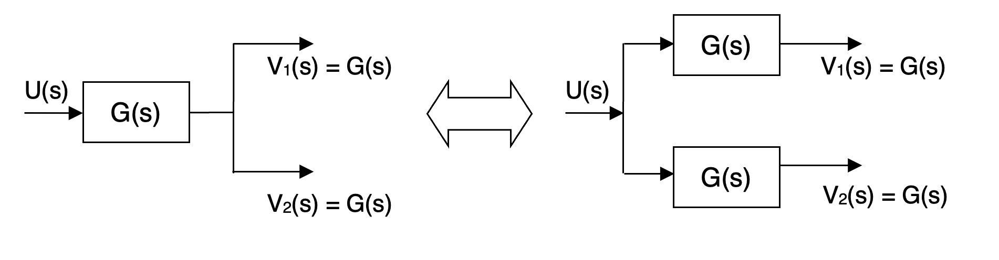
También podría darse la transposición de un bloque hacia "aguas arriba" de la bifurcación: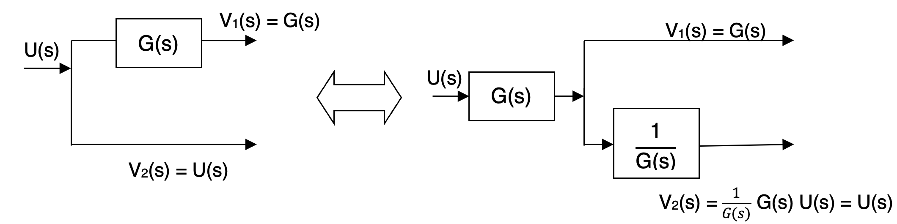
Cualquiera de las dos transformaciones que hemos visto pueden hacerse en cualquier dirección: de izquierda a derecha o de derecha a izquierda. De ahí la flecha de doble sentido.Transposición en puntos de suma
Otra forma de simplificar diagramas de flujo mediante transposición puede ser aplicar ésta a los puntos de suma en lugar de a las bifurcaciones. De nuevo se puede hacer siguiendo el sentido hacia "aguas abajo" del sumador o hacia "aguas arriba" (y de nuevo es válido tanto de izquierda a derecha como de derecha a izquierda).
A continuación, se ilustran estos casos con la correspondiente justificación:
Aguas abajo:
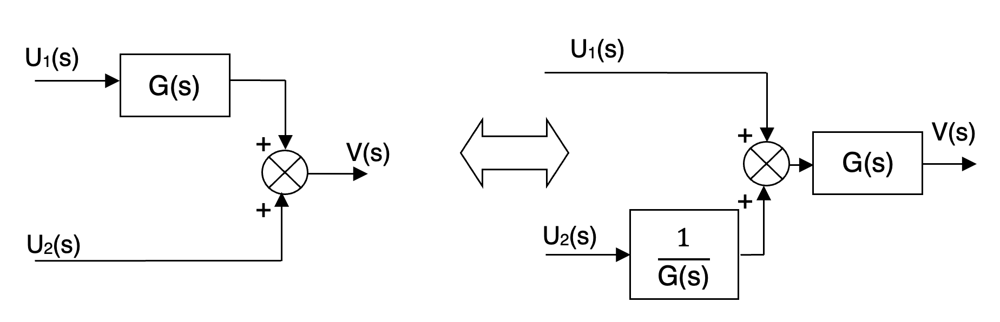
Aguas arriba:
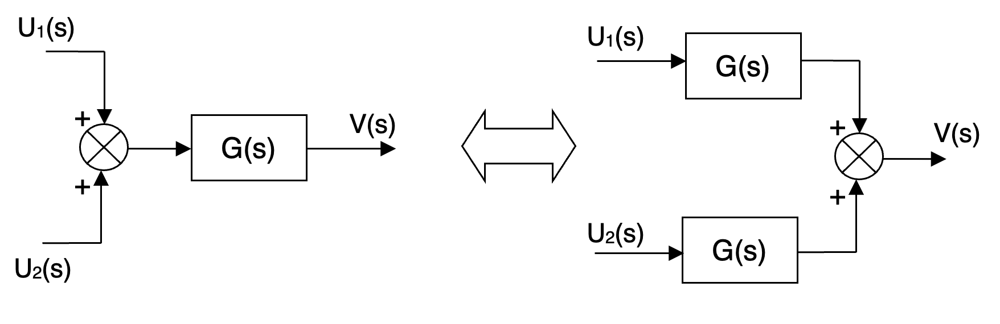
Ejemplo resuelto
A continuación, veremos un ejemplo de aplicación de las técnicas ya comentadas para simplificar un diagrama de flujo complicado y reducirlo a un solo bloque equivalente, cuya función de transferencia será conocida.
Antes de seguirlo en las figuras, puedes recorrer la simplificación paso a paso aquí, cambiando las ganancias: fíjate en que la función de transferencia vale lo mismo en los ocho pasos.
El circuito para simplificar será el siguiente:
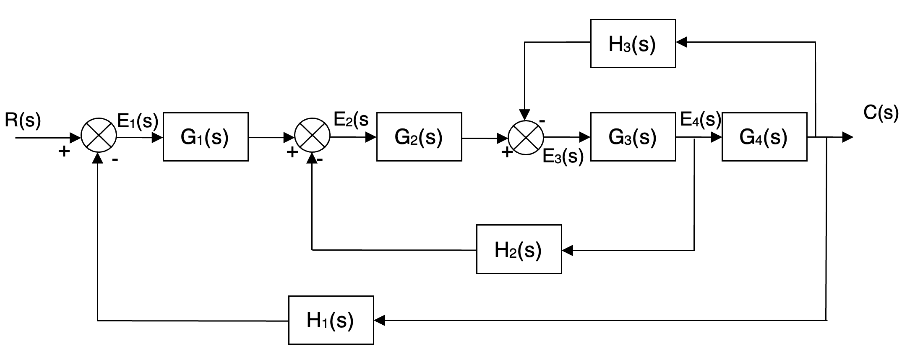
En primer lugar, aplicamos al bloque G2 la transposición de sumadores aguas arriba que hemos visto, y el diagrama queda así: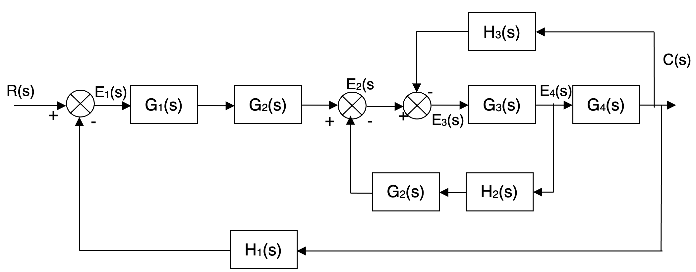
Se puede observar que podemos agrupar en serie G1 con G2 y, por otro lado, G2 con H2. Además, los comparadores E2 y E3 pueden intercambiar su orden y el resultado no varía (sólo cambiamos de orden los elementos de una suma y resta). Por consiguiente, podemos poner: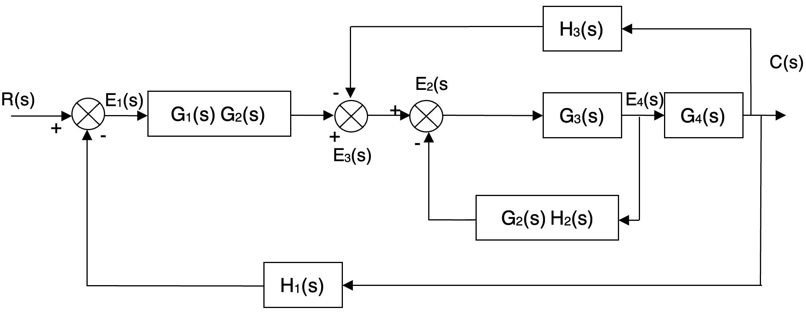
Ahora se puede observar que hay un bucle cerrado compuesto por el comparador E2, el bloque G3 y el bloque de realimentación G2·H2. Sustituyendo este bucle por su bloque equivalente nos queda: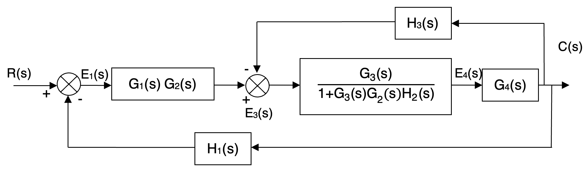
Ahora tenemos dos bloques en serie: el que acabamos de calcular y el G4. Sustituyéndolos por su equivalente (producto de las funciones de transferencia) nos queda: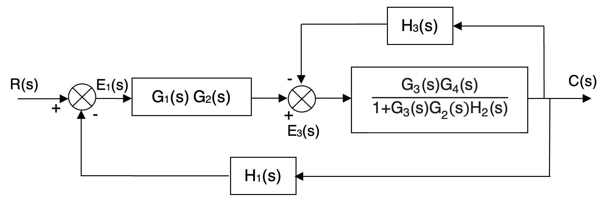
Lo siguiente que se observa es que volvemos a tener un bucle cerrado formado por el bloque recién calculado, el comparador E3 y la realimentación H3.Por claridad, calculamos previamente la función de transferencia equivalente y la simplificamos al máximo para escribirla en el bloque. La función de transferencia equivalente será:
\[\frac{\frac{G_{3}(s)G_{4}(s)}{1+G_{3}(s)G_{2}(s)H_{2}(s)}}{1+H_{3}(s)\frac{G_{3}(s)G_{4}(s)}{1+G_{3}(s)G_{2}(s)H_{2}(s)}}=\frac{G_{3}(s)G_{4}(s)}{1+G_{3}(s)G_{2}(s)H_{2}(s)+G_{3}(s)G_{4}(s)H_{3}(s)}\]
Y el diagrama de bloques quedará de la siguiente manera:
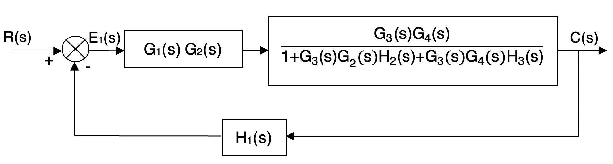
El siguiente paso no es más que agrupar los dos bloques que tenemos en serie: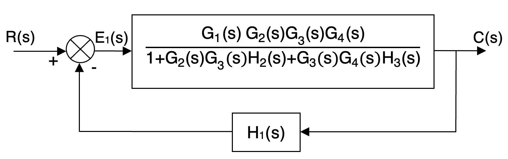
Y ya tenemos el diagrama reducido a un sistema en bucle cerrado con elemento de realimentación. La función de transferencia equivalente final quedará, por lo tanto:\[\frac{\frac{G_{1}(s)G_{2}(s)G_{3}(s)G_{4}(s)}{1+G_{2}(s)G_{3}(s)H_{2}(s)+G_{3}(s)G_{4}(s)H_{3}(s)}}{1+H_{1}(s)\frac{G_{1}(s)G_{2}(s)G_{3}(s)G_{4}(s)}{1+G_{2}(s)G_{3}(s)H_{2}(s)+G_{3}(s)G_{4}(s)H_{3}(s)}}=\]
\[=\frac{G_{1}(s)G_{2}(s)G_{3}(s)G_{4}(s)}{1+G_{2}(s)G_{3}(s)H_{2}(s)+G_{3}(s)G_{4}(s)H_{3}(s)+G_{1}(s)G_{2}(s)G_{3}(s)G_{4}(s)H_{1}(s)}\]
Por consiguiente, todo el diagrama de bloques anterior puede sustituirse por un solo bloque con la función de transferencia total que acabamos de calcular:
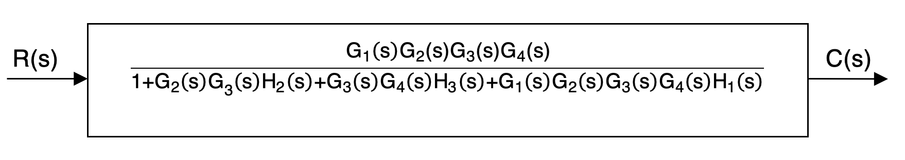
Colección de álgebra de bloques
Once diagramas para reducir a un único bloque equivalente: serie, paralelo, realimentación negativa y positiva, un paralelo dentro del lazo, dos lazos anidados, el error en régimen permanente y, en los tres últimos, lazos solapados que se separan con una transposición. Los resultados van todos juntos, en un apartado «Resultados» al final del documento, para que compruebes el tuyo cuando hayas terminado.
Colección de problemas tipo PAU
Diez problemas con el formato y el alcance del bloque F: identificación de los elementos de un sistema real, ventajas del lazo cerrado, álgebra de bloques con valores numéricos, tipo de regulador a partir de su comportamiento, estabilidad cualitativa y elección de sensores. Los resultados van todos juntos, en un apartado «Resultados» al final del documento, para que compruebes el tuyo cuando hayas terminado.